Engagement 01
The olympiad
The landing page, registration, onboarding and the in-app event, across the website and the app.
A paid sports competition for 12 to 18 year olds, played at home and scored by a phone camera. I designed every surface: the landing page, registration, first-run onboarding and the event itself.
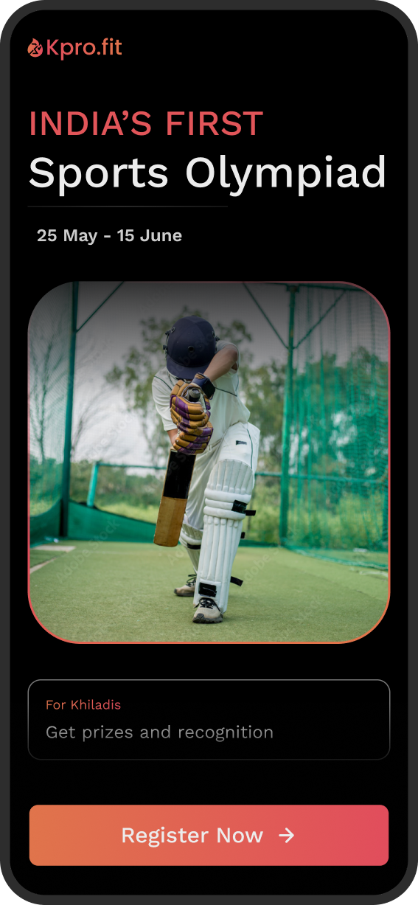
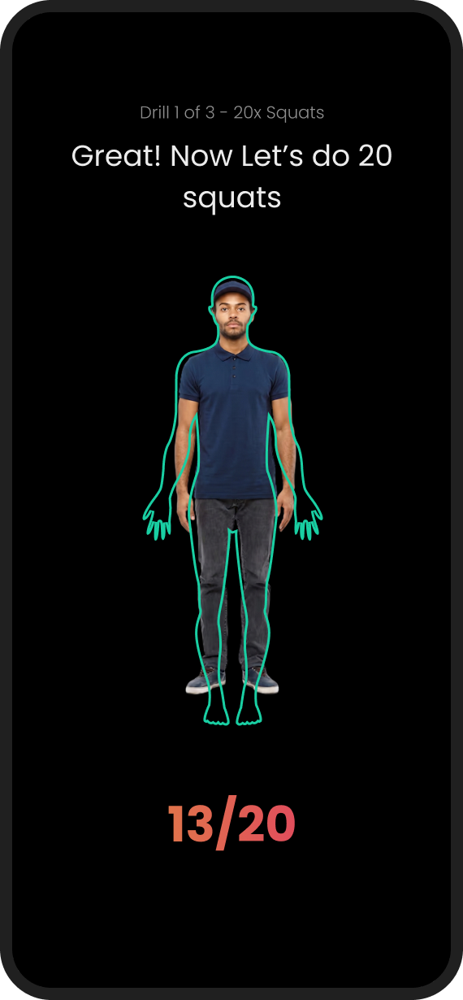
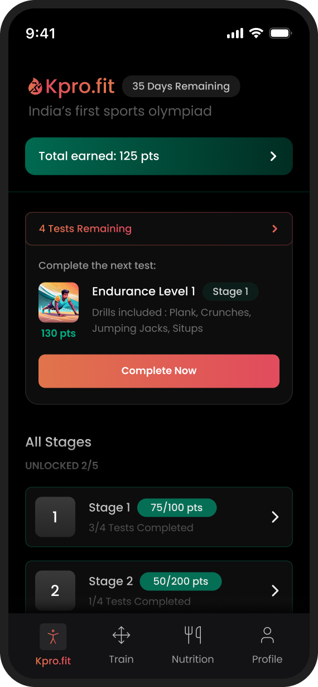
No analytics access, so there are no impact metrics on this page. What I would measure next
The brief 00 / 05
That was the whole brief. Strategy and success metrics stayed with the client, for whom the olympiad was an acquisition play into casual sports participants. The design was mine: four surfaces, shaped by five constraints.
The four surfaces
The five constraints
The olympiad ran 25 May to 15 June, and marketing needed the pages before it opened.
What it forcedDates lead the page, and the deadline stays visible everywhere.
Students compete, parents pay, academies bring whole cohorts.
What it forcedThree distinct promises, sequenced down a single landing page.
Registration and payment both happen on the web.
What it forcedReassurance beside the form, before anyone downloads the app.
No formal design system. New screens had to feel native.
What it forcedType, scale and state patterns, all inside the existing language.
One designer, a PM, an engineer and the CEO.
What it forcedOwning every screen: website, onboarding and the live event.
First-run onboarding 01 / 05
If onboarding fails, the drill cannot be scored, and in a paid event that becomes a refund request. So I designed it as a rehearsal: hold the phone, prop it up, step away, then move. Scroll to walk all nine screens, or step through them yourself.
A video introduces camera-based scoring before the app asks for access.
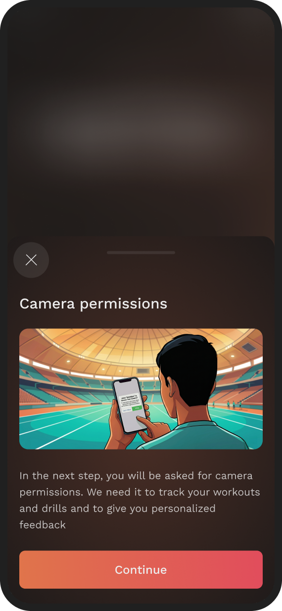
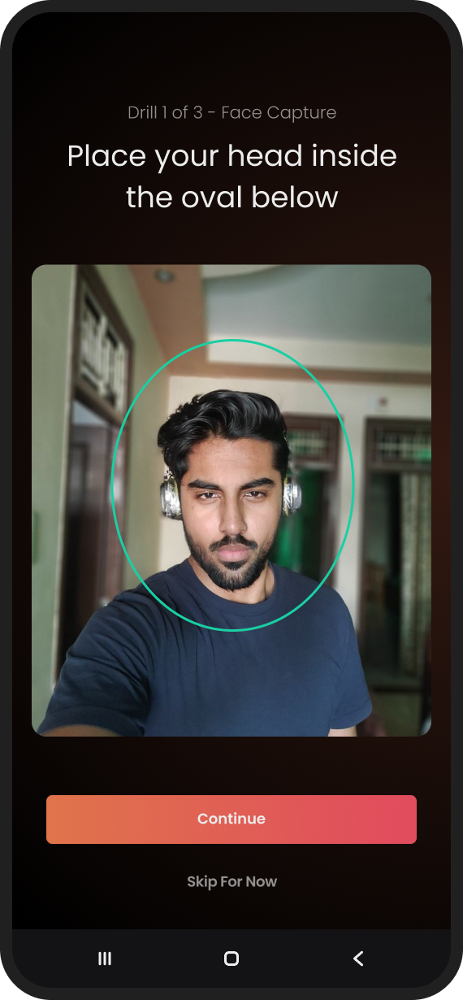
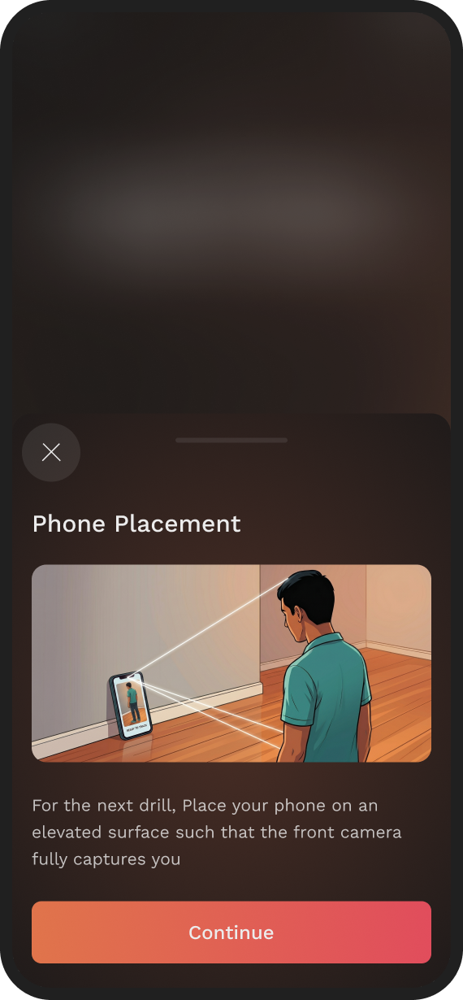
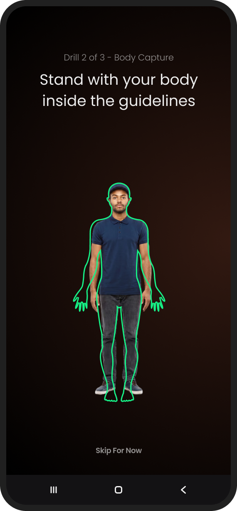
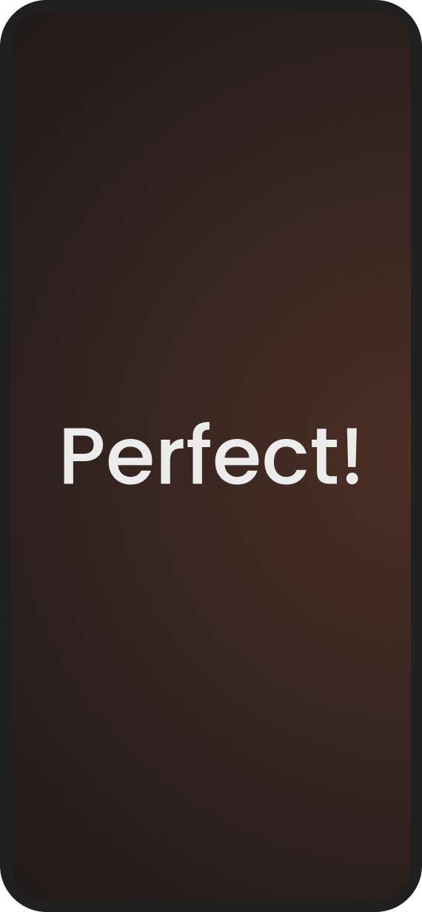
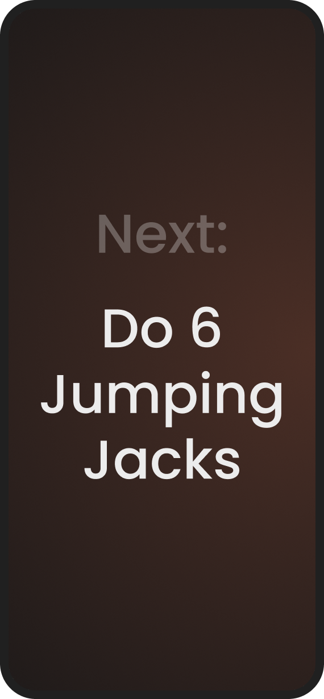
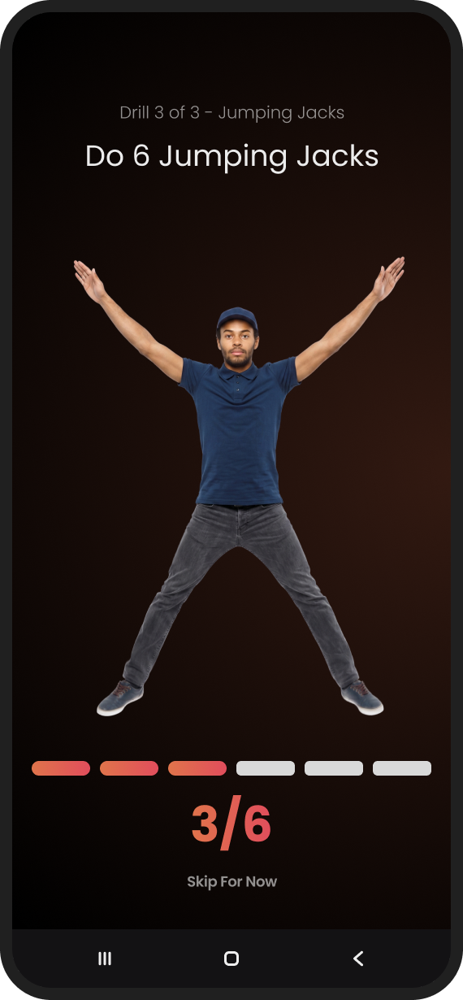
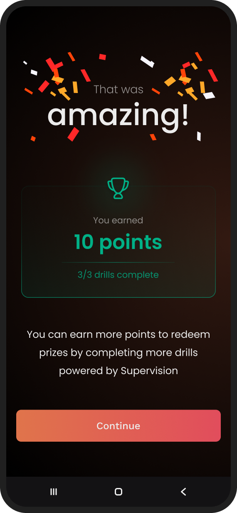
Why rehearse at all
Onboarding does not explain the app. It runs the exact screen the scored test will use, so the first time it counts is the second time you have seen it. Side by side, only the drill and the stakes change.
The frame is locked across both
What it buys
A player’s first scored drill is never their first drill.
The instruction, the body guide and the counter have all been seen once already, with nothing at stake. The first attempt that counts should never fail because the screen was new.
What it costs
Every onboarding step keeps “Skip for now”.
It gives returning users a way through, and also lets a first-timer skip the rehearsal that makes their first drill scoreable. I shipped that trade-off knowingly.
Landing & registration 02 / 05
The student, the parent paying and the academy coach all arrive at the same URL. Pick a screen size below and watch what each of them still gets, and what the narrow fold takes away.
Pick a reader: the page lights up where it answers them.
Who is reading
Above the fold at 1440 px
Design-stage export. A clean re-export is pending.
From the page to the form
Payment happens on the web, before anyone installs anything. A parent is deciding with no product to try, so three decisions all carry the same job: keep them typing.
Three decisions
The in-app event 03 / 05
The olympiad ran inside KhiladiPro’s main app. Between drills, this is where participants spent their days: getting in, seeing what came next, deciding whether to start a 24-minute test and checking what counted. Scroll through all seven screens, or jump straight to one.
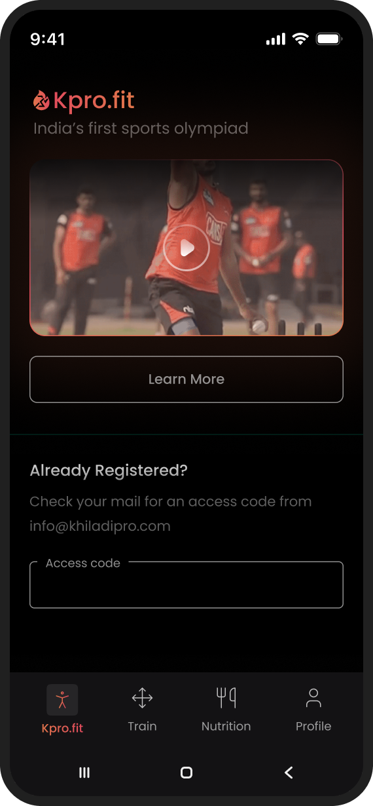
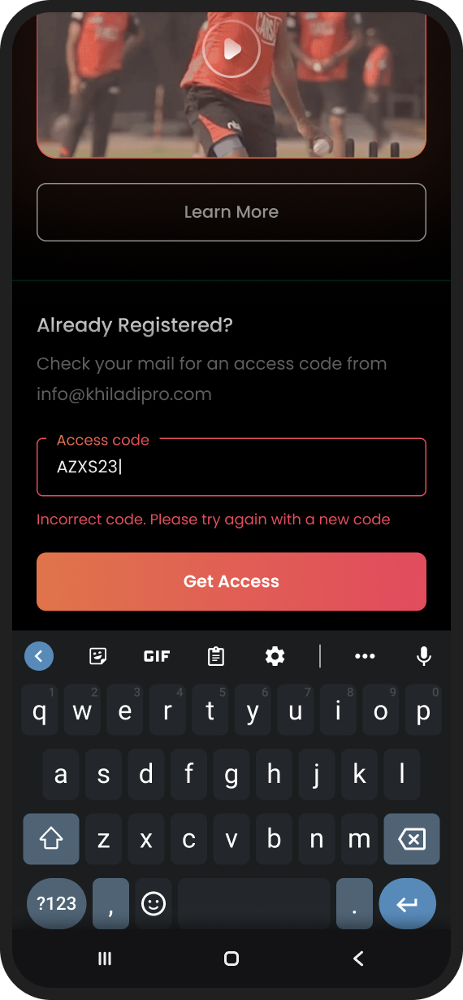
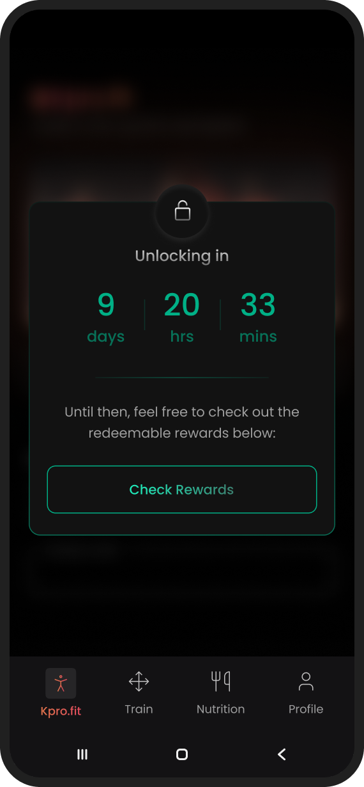
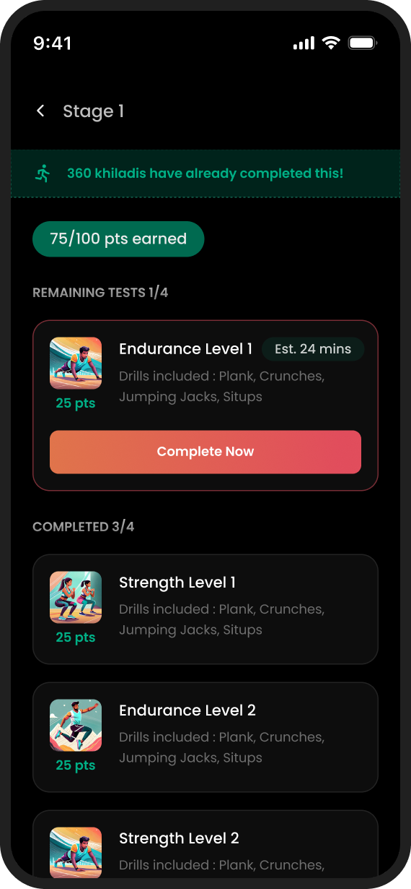
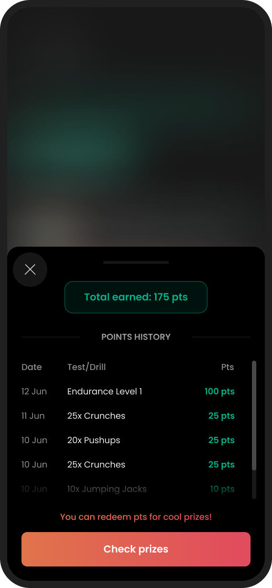
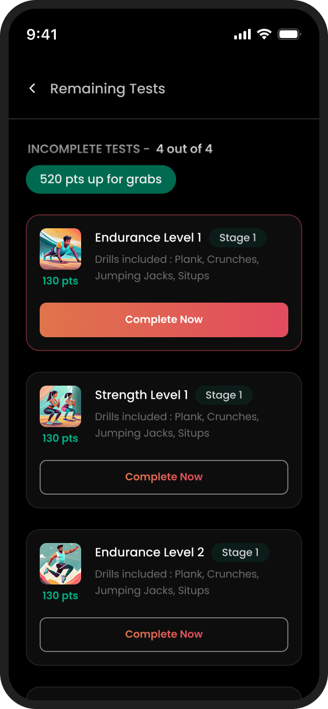
An event introduction and the access code sent by email.
“I paid on the web. How do I get in?”
Before it opens
During the event
After each test
They came back 04 / 05
After the olympiad, the growth team brought me back for a second engagement: the landing page for an IPL fan campaign, on desktop and mobile.
Engagement 01
The landing page, registration, onboarding and the in-app event, across the website and the app.
Engagement 02
A page that had to convert fans during a live tournament. The in-house team owned the app screens.
Outcome
Everything I designed for KhiladiPro shipped: the web journey, the onboarding and the event screens. Nothing was redrawn by someone else on the way to build.
Source material 05 / 05
Seven Figma prototypes, from the first lo-fi structure through to the live-event flow. All of them open in a new tab.